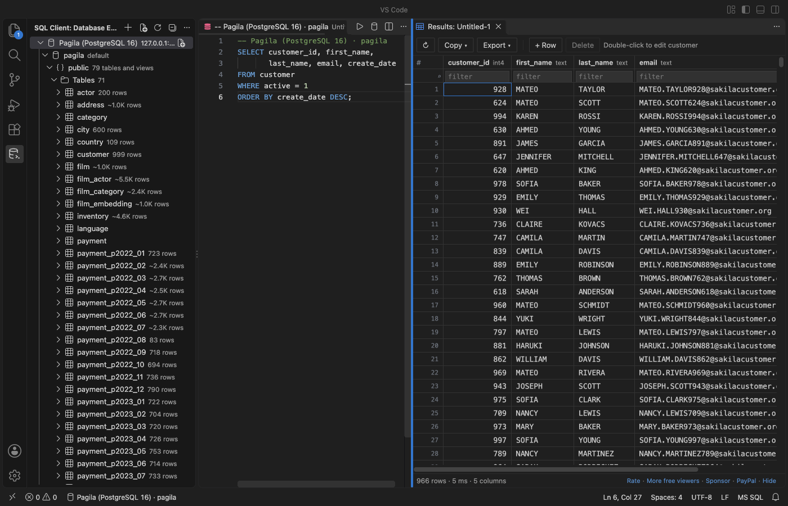

Open files in VS Code and Cursor / Tables and data
A free database client for VS Code, with no connection limit
Install the free Postgres & MySQL Query Client by Zovo for PostgreSQL, MySQL, MariaDB and SQLite files. It has no connection limit, and editing rows and exporting results cost nothing. For MongoDB, use the free MongoDB Client by Zovo. The Database Client by cweijan, a popular choice, limits its free tier to 3 connections in each of its two panels.
Free, MIT license. Extension ID zovo.zovo-sql-client, version 0.2.4. Needs VS Code 1.90.0 or newer.
Also free from Zovo: SQLite Editor & Viewer, VS Code Marketplace · Open VSX (Cursor, Windsurf).

Steps in VS Code
- Install Postgres & MySQL Query Client from the Marketplace, or press Ctrl+P (Cmd+P on macOS) and run
ext install zovo.zovo-sql-client. - Open the SQL Client view in the activity bar and click Add Connection.
- Paste a
postgres://ormysql://URL, or fill in host, port, user, database and SSL mode. Click Test connection, then Save. The password goes to VS Code's secret storage. - Add as many connections as you need. There is no limit and no counter.
- Click New Query on a connection, type SQL and press Ctrl+Enter (Cmd+Enter on macOS) to run the statement at the cursor.
- Click a table to browse it. Double-click a cell to edit it. Review shows the exact
UPDATE, and it runs in one transaction.
Steps in Cursor, Windsurf or VSCodium
- Open the Extensions view with Ctrl+Shift+X (Cmd+Shift+X on macOS).
- Search for
zovo.zovo-sql-clientand click Install. Cursor, Windsurf and VSCodium install from Open VSX, where it is published aszovo/zovo-sql-client. - If your editor has no gallery, download the .vsix from the Open VSX page and run "Extensions: Install from VSIX...".
- Then use it the same way as in VS Code.
What Postgres & MySQL Query Client handles
- PostgreSQL, MySQL and MariaDB servers and SQLite files, with unlimited connections. The release test used 7 connections on one machine.
- A Database Explorer with schemas, tables, views, columns with types and keys, indexes and estimated row counts. Each level loads when you open it.
- A results grid that loads 1,000 rows at a time, free row edits, and export of a result or a whole table to CSV, JSON or SQL INSERT.
- No keep-alive and no polling. In the release test, the PostgreSQL and MariaDB statement logs showed 0 statements in 60 idle seconds while connections were open.
- MongoDB: MongoDB Client by Zovo shows documents in a grid or as JSON, builds aggregations with a stage preview, manages indexes, and imports and exports. Editing is free. It works with MongoDB 4.2 and later, Atlas, Azure Cosmos DB for MongoDB, Amazon DocumentDB and FerretDB.
- SQLite files: SQLite Editor & Viewer by Zovo opens .db and .sqlite files read-only and edits them after you click Enable editing. Viewing, editing, Save and CSV import are free.
- Oracle and SQL Server: Oracle SQL & SQL Server Query Client by Zovo runs T-SQL and PL/SQL and browses tables.
What it does not do
- The Postgres & MySQL client does not connect to SQL Server, Oracle, MongoDB or Redis. Oracle, SQL Server and MongoDB have their own Zovo extensions; a Zovo Redis client is not on the Marketplace yet.
- A table without a primary key is read-only in the grid, and the grid says why.
- SQLite files are read into memory, up to 512 MB by default.
Free and Zovo Pro
Free, and staying free: unlimited connections to PostgreSQL, MySQL, MariaDB and SQLite, the Database Explorer, running SQL, the results grid, row edits, Cancel, and export to CSV, JSON or SQL INSERT.
Zovo Pro adds these tools to Postgres & MySQL Query Client. Each one works 3 times on your computer before it asks for a license. Nothing about Pro shows when you open a file: no popup, no countdown, no banner.
- Explain Plan: the plan of the statement at the cursor as a tree with cost bars, the slowest step marked, and plain hints (a full scan of a filtered table, a sort that spilled to disk, a step with no index, a row estimate 10 times off). Explain Analyze shows the real time and rows per step.
- Table data compare: two tables on any two connections, matched by primary key, with a report and a SQL script that makes the second table match the first. The script is opened, never run for you.
- ER diagram of a schema: tables, columns, keys and foreign-key links. Drag tables to arrange them, then save it as SVG.
- Schema compare: two schemas, from any two connections, side by side in VS Code's diff view.
- CSV import into a table: header names matched to columns, rows inserted in batches of 500.
- Query library: named queries saved on your computer that open on any connection.
Zovo Pro costs USD 19 once. It is not a subscription, and one purchase covers every Zovo VS Code extension. Today it also covers the Pro tools in Hex Viewer and DOCX Viewer, and Pro tools added to other Zovo extensions later.
Two ways to unlock it:
- GitHub Sponsors: pick the "$19 one time" tier. Then, in VS Code, click a Pro tool and pick "Unlock with GitHub Sponsors" (or type "GitHub Sponsors" in the Command Palette) and sign in with the same GitHub account. A monthly sponsorship of USD 10 or more that is still running counts too.
- PayPal, no GitHub account needed: send USD 19 by PayPal with "Zovo Pro" in the note, then post the transaction ID with the Zovo Pro key form (a public GitHub issue, so post only the ID). The license key goes to the email address of your PayPal account within a day. Click a Pro tool and pick "I have a license key" (or type "license key" in the Command Palette) and paste it. The key is checked on your computer, with no network call.
A team of 5: USD 59 once by PayPal, with "Zovo Pro Team" in the note. Every rule and every Pro tool is on the Zovo Pro page.
In JetBrains IDEs (IntelliJ IDEA, PyCharm, WebStorm, CLion and others)
- Database Tools and SQL. JetBrains' own database tools, in DataGrip and IntelliJ IDEA Ultimate. They connect to PostgreSQL and MySQL, run SQL and edit table data. For WebStorm they come as this plugin (1,090,402 downloads). Zovo has no JetBrains database plugin.
- Database Navigator. A free plugin with 5,052,374 downloads. Its listing calls it "a database development and management plugin for JetBrains IDEs".
Other options
- Database Client (
cweijan.vscode-database-client2, 1.4 million installs, on Open VSX). Its own description: "Database Management for MariaDB/SQLite, supports executing SQL." Its site says free users are limited to 3 connections in the Database panel and Service panel each, and Premium unlocks unlimited connections (database-client.com, checked 10 November 2026). - MySQL (
cweijan.vscode-mysql-client2, 3 million installs, on Open VSX). Its own description: "Database Management for MySQL/MariaDB, PostgreSQL, Redis and ElasticSearch." From the same publisher as Database Client. - SQLTools (
mtxr.sqltools, 7.2 million installs, on Open VSX). Its own description: "Connecting users to many of the most commonly used databases." Each database needs its own driver extension. - MongoDB for VS Code (
mongodb.mongodb-vscode, 3.2 million installs, on Open VSX). The MongoDB extension from MongoDB, Inc. Its own description: "Connect to MongoDB and Atlas directly from your VS Code environment, navigate your databases and collections, inspect your schema and use playgrounds". - PostgreSQL (Microsoft) (
ms-ossdata.vscode-pgsql, 806,750 installs, not on Open VSX). Its own description: "Develop, query, and manage PostgreSQL (Postgres) databases with IntelliSense, Object Explorer, schema tools, and AI-assisted workflows." PostgreSQL only.
Install counts and Open VSX status were checked on 10 November 2026. Descriptions in quotes are the extensions' own.
Questions
Is there a free database client for VS Code with no connection limit?
Yes. Postgres & MySQL Query Client by Zovo has no connection limit, and row edits and export are free. MongoDB Client and SQLite Editor & Viewer by Zovo are free too, and so are SQLTools and the PostgreSQL extension from Microsoft.
How many connections does the free Database Client by cweijan allow?
Its site says 3 connections in the Database panel and 3 in the Service panel on the free tier, and Premium removes the limit. That was the text on 10 November 2026; check its site for the current rules.
Do these work in Cursor and Windsurf?
Yes. The four Zovo database extensions are on Open VSX, so Cursor, Windsurf and VSCodium install them from there.
Is there a licence for a team?
The free features need no licence. Zovo Pro adds tools such as the ER diagram and schema compare. For a team of 5 it costs USD 59 once, on GitHub Sponsors or by PayPal, and it covers the Pro tools in every Zovo extension. Details are on the Zovo Pro page.
More about Postgres & MySQL Query Client
Read the Postgres & MySQL Query Client page for every feature and setting, or the source code on GitHub.
Related guides
- SQLite Editor & Viewer on the VS Code Marketplace (also on Open VSX). Opens .db and .sqlite files as tables, edits cells and runs SQL.
- Use a PostgreSQL client in VS Code
- Use a MySQL client in VS Code
- See an ER diagram of your database in VS Code
- Compare two Postgres schemas
Zovo Pro and support
Zovo Pro: USD 19 once, every Zovo viewer. It turns on the Pro tools in this extension and in the other Zovo extensions you use. The free features stay free.
After a card payment your license key shows on the next page. Paste it with the command "Zovo Pro: Enter a key".
You can also support the work with no Pro:
Need your format supported?
Open a format request with a sample file, and I reply there whether it can be done. For USD 299 once, through this GitHub Sponsors tier, I add your file format or a missing feature to this extension, with tests, within 7 days.